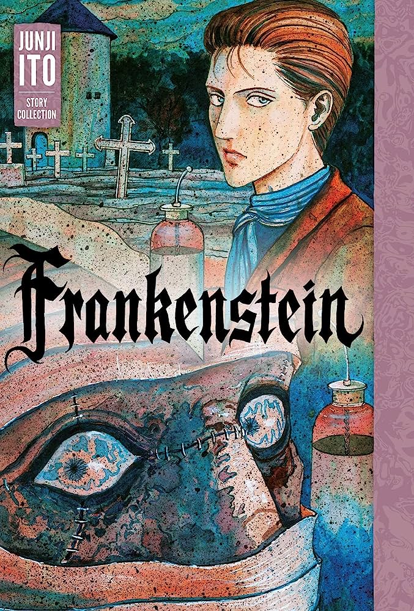

Frankenstein - Junji-Ito
Frankenstein (フ ラ ン ケ ン シ ュ タ イ ン, Furankenshutain ? ) É uma coleção de manga shōjo de Junji Itō pré-publicada em várias revistas entreSetembro de 1994 e 1998então publicado pela Asahi Sonorama em um volume de capa dura lançado emJaneiro de 1999. A versão francesa foi editada por Tonkam na coleção “Frissons” em volume lançado emfevereiro de 2014.
Esta coleção é o último dos "Itoh Kyofu Manga Coleção Junji (伊藤潤二恐怖マンガcoleção ? ) ", Publicado sob o n o 16 em Japão e França .
A edição americana do álbum ganhou seu autor em julho de 2019o Prêmio Eisner de melhor adaptação para a história "Frankenstein".